Abstract
Catastrophic forgetting, the tendency of neural networks to forget previously learned knowledge when learning new tasks, has been a major challenge in continual learning (CL). To tackle this challenge, CL methods have been proposed and shown to reduce forgetting. Furthermore, CL models deployed in mission-critical settings can benefit from uncertainty awareness by calibrating their predictions to reliably assess their confidences. However, existing uncertainty-aware continual learning methods suffer from high computational overhead and incompatibility with mainstream replay methods. To address this, we propose idempotent experience replay (IDER), a novel approach based on the idempotent property where repeated function applications yield the same output. Specifically, we first adapt the training loss to make model idempotent on current data streams. In addition, we introduce an idempotence distillation loss. We feed the output of the current model back into the old checkpoint and then minimize the distance between this reprocessed output and the original output of the current model. This yields a simple and effective new baseline for building reliable continual learners, which can be seamlessly integrated with other CL approaches. Extensive experiments on different CL benchmarks demonstrate that IDER consistently improves prediction reliability while simultaneously boosting accuracy and reducing forgetting. Our results suggest the potential of idempotence as a promising principle for deploying efficient and trustworthy continual learning systems in real-world applications.
Method

Our proposed approach SURE contains two aspects: increasing entropy for hard samples and enforcing flat minima during optimization. We incorporate RegMixup loss and correctness ranking loss (CRL) as our loss function and employ cosine similarity classifier (CSC) as our classifier to increase entropy for hard samples. As in optimization, we leverage Sharpness-Aware Minimization (SAM) and Stochastic Weight Averaging (SWA) to find flat minima.
Quantitative results
Please refer to our paper for more experiments.
Failure prediction
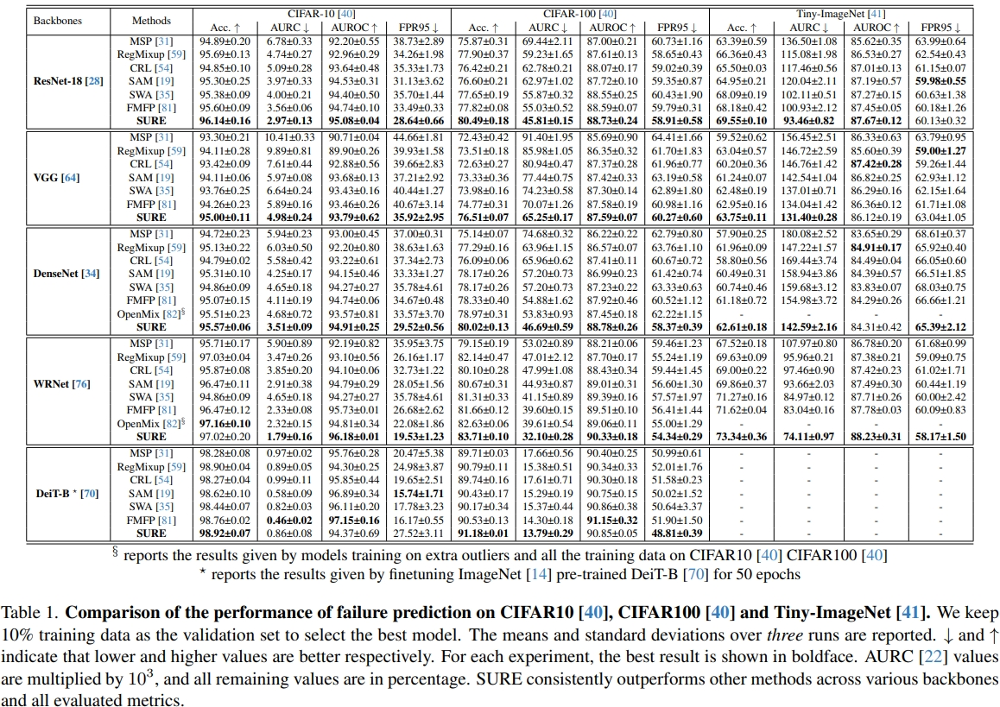
Out-of-distribution detection
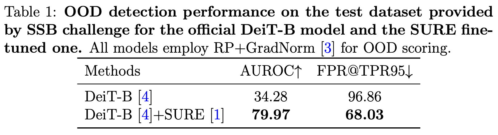
Long-tailed classification
Learning with noisy labels
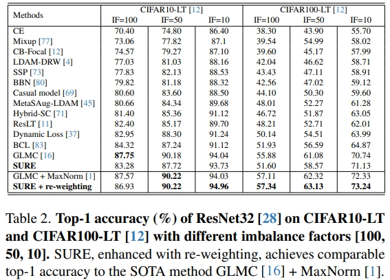
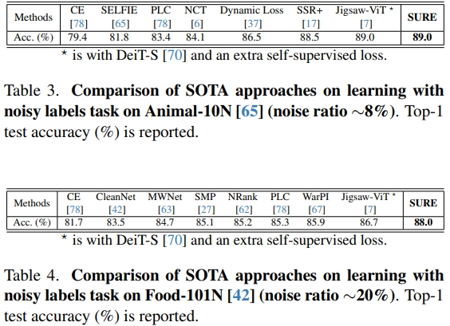
Robustness under data corruptions
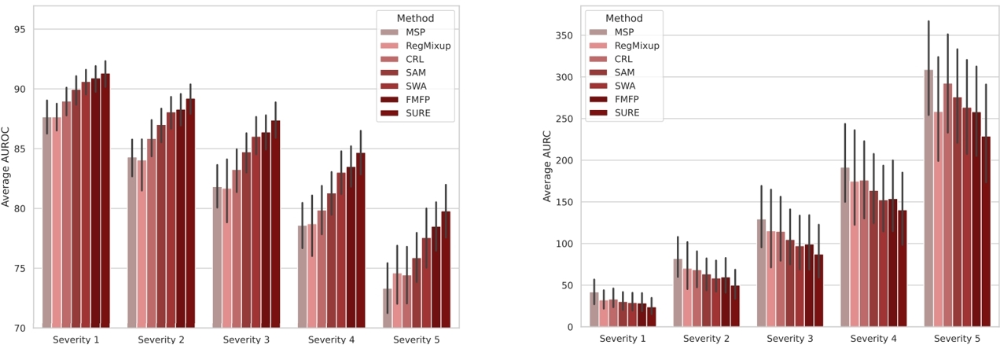
Visual results
Failure prediction
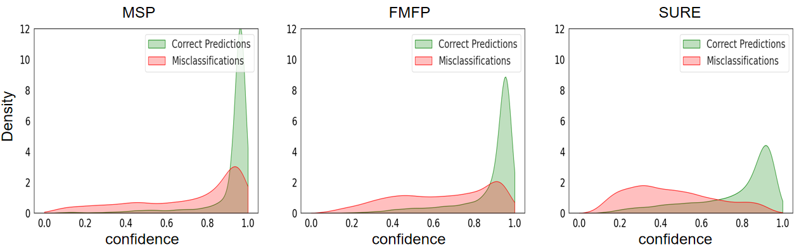
Out-of-distribution detection
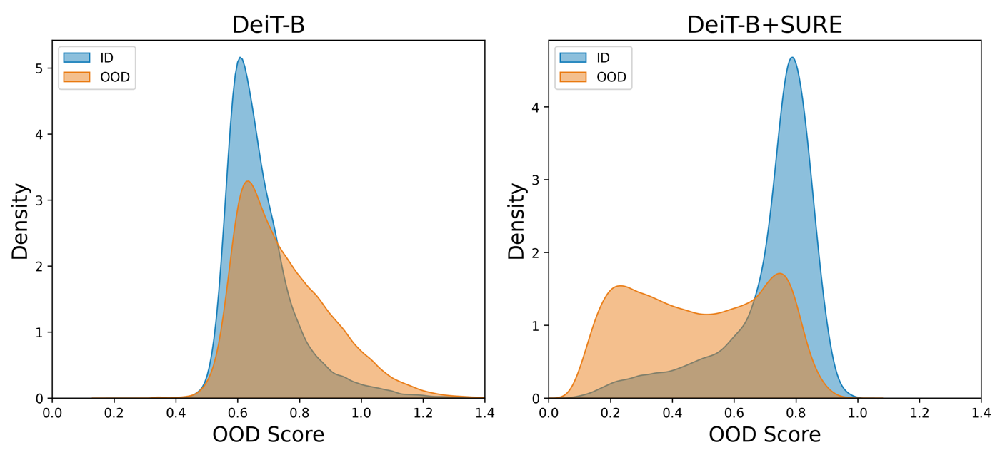
Resources
Paper
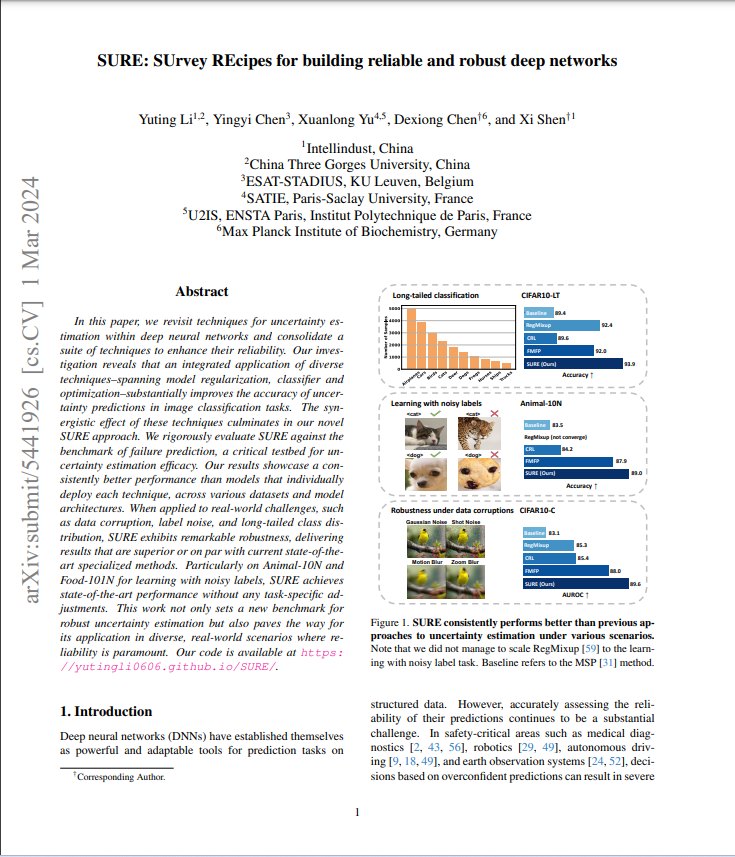
Code
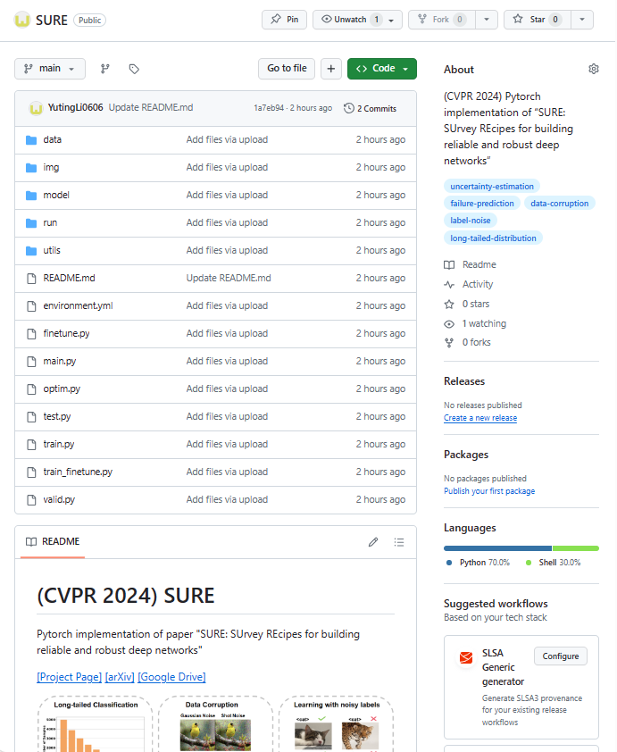
Poster
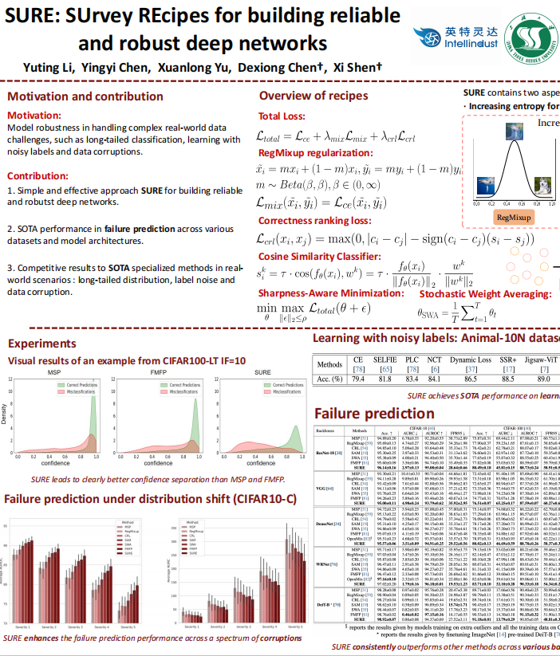
Code (SURE-OOD)
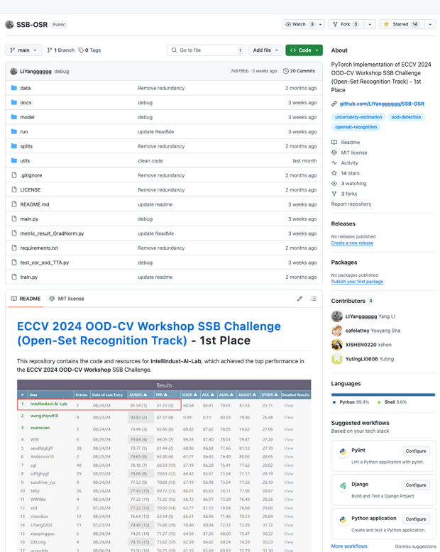
Tech. Report
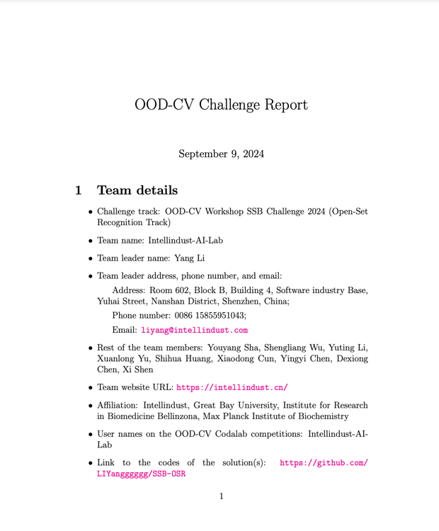
BibTeX
If you find this work useful for your research, please cite:
@inproceedings{li2024sure,
title={SURE: SUrvey REcipes for building reliable and robust deep networks},
author={Li, Yuting and Chen, Yingyi and Yu, Xuanlong and Chen, Dexiong and Shen, Xi},
booktitle={Proceedings of the IEEE/CVF Conference on Computer Vision and Pattern Recognition},
year={2024}
}
@article{Li2024sureood,
author={Li, Yang and Sha, Youyang and Wu, Shengliang and Li, Yuting and Yu, Xuanlong and Huang, Shihua and Cun, Xiaodong and Chen,Yingyi and Chen, Dexiong and Shen, Xi},
title={SURE-OOD: Detecting OOD samples with SURE},
month={September},
year={2024}
}
Acknowledgements
We thank Caizhi Zhu, Yuming Du and Yinqiang Zheng for inspiring discussions and valuable feedback.